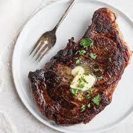

Recipe For Cooking Steaks

New York Style Sirloin Steak
The following recipe is very simple to learn yet you will experience a plethora of joy
tasting this juicy, joyful and just heavenly steak.
Cooking steak is relatively simple and quick so if you are in hungry and in need of a quick recipe to
fullfill your needs this is the place to go.
Ingredients
- 150g Fresh Sirloin Steak
- Butter
- Salt
- Pepper
- Garlic
- Sage
Steps
- First heat your pan under medium heat for a minute
- Next add half a tea spoon of butter to the pan and wait for it to sizzle
- Once the butter starts sizzling place the steak in the pan
- Now add your ingredients to the steak while the bottom cooks for about 3-6 minutes
depending on how you want you steak done
- Once you have cooked the bottom half of the steak, flip it and repeat the steps above for cooking the top
- Once the top part has been cooked you can add a hint of buttter with sage
- And there you go, you have made the perfect steak enjoy!